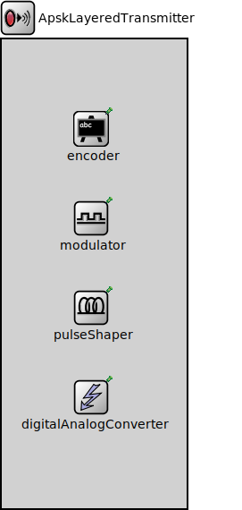

Package: inet.physicallayer.wireless.apsk.bitlevel
ApskLayeredTransmitter
compound moduleThis transmitter model is part of a simple hypothetical layered radio. It produces detailed transmissions that have separate representation for all simulated domains. The levelOfDetail parameter controls which domains are actually simulated, but all parameters relevant to the error model are always set on the transmission.
With the highest level of detail, the produced transmission contains the following:
- a separate packet to represent the PHY frame
- precise bit representation of the whole packet
- precise bit representation after scrambling, fec encoding, and interleaving
- precise symbol representation of the whole packet including physical header
- narrowband analog representation using scalar transmission power
NOTE: the current implementation doesn't support pulse shaping and digital analog conversion.
This transmitter model supports scrambling, convolutional coding, interleaving, and modulating various amplitude and phase-shift modulations. The main purpose of this model is to provide a basic infrastructure for further development and experimentation.
<b>See also:</b> ~ApskEncoder, ~ApskModulator, ~ApskLayeredReceiver.
Usage diagram
The following diagram shows usage relationships between types. Unresolved types are missing from the diagram.
Inheritance diagram
The following diagram shows inheritance relationships for this type. Unresolved types are missing from the diagram.
Parameters
| Name | Type | Default value | Description |
|---|---|---|---|
| levelOfDetail | string | "symbol" | |
| bitrate | double |
net bitrate of the transmitter |
|
| power | double |
scalar transmission power for the whole signal duration |
|
| centerFrequency | double |
center frequency of the narrowband carrier signal |
|
| bandwidth | double |
bandwidth |
Properties
| Name | Value | Description |
|---|---|---|
| display | i=block/wtx | |
| class | ApskLayeredTransmitter |
Source code
// // This transmitter model is part of a simple hypothetical layered radio. It // produces detailed transmissions that have separate representation for // all simulated domains. The levelOfDetail parameter controls which domains // are actually simulated, but all parameters relevant to the error model are // always set on the transmission. // // With the highest level of detail, the produced transmission contains the // following: // - a separate packet to represent the PHY frame // - precise bit representation of the whole packet // - precise bit representation after scrambling, fec encoding, and interleaving // - precise symbol representation of the whole packet including physical header // - narrowband analog representation using scalar transmission power // // NOTE: the current implementation doesn't support pulse shaping and digital // analog conversion. // // This transmitter model supports scrambling, convolutional coding, interleaving, // and modulating various amplitude and phase-shift modulations. The main purpose // of this model is to provide a basic infrastructure for further development and // experimentation. // // @see ~ApskEncoder, ~ApskModulator, ~ApskLayeredReceiver. // module ApskLayeredTransmitter like ITransmitter { parameters: string levelOfDetail @enum("packet","bit","symbol","sample") = default("symbol"); double bitrate @unit(bps); // net bitrate of the transmitter double power @unit(W); // scalar transmission power for the whole signal duration double centerFrequency @unit(Hz); // center frequency of the narrowband carrier signal double bandwidth @unit(Hz); // bandwidth @display("i=block/wtx"); @class(ApskLayeredTransmitter); submodules: encoder: <default("ApskEncoder")> like IEncoder if typename != "" { @display("p=100,100"); } modulator: <default("ApskModulator")> like IModulator { @display("p=100,200"); } pulseShaper: <default("")> like IPulseShaper if typename != "" { @display("p=100,300"); } digitalAnalogConverter: <default("")> like IDigitalAnalogConverter if typename != "" { @display("p=100,400"); } }File: src/inet/physicallayer/wireless/apsk/bitlevel/ApskLayeredTransmitter.ned
 This documentation is released under the Creative Commons license
This documentation is released under the Creative Commons license